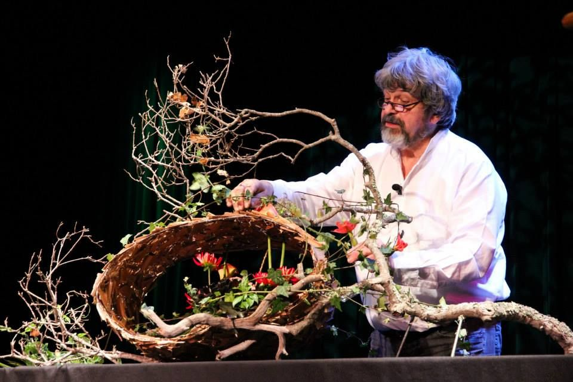
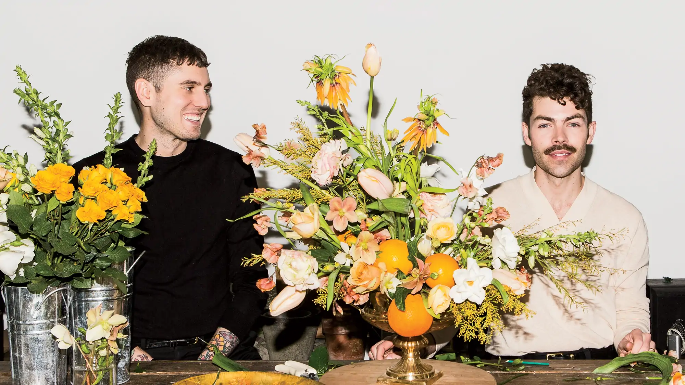

Грегор Лерш
Грегор Лерш - известный немецкий флорист, известный своим инновационным и художественным подходом к флористике.
Даниэль Ост
Даниэль Ост - бельгийский флорист, прославившийся своими крупномасштабными цветочными инсталляциями и креативными дизайнами.
Паула Прайк
Паула Прайк - известная британская флористка и автор, известная своими яркими и современными цветочными композициями.

Патнэм и Патнэм
Майкл и Даррох Патнэм - американский дуэт флористов, известный своими пышными и романтичными цветочными композициями.
Джейн Пакер
Джейн Пакер - известная британская флористка, известная своим современным и стильным подходом к флористике.